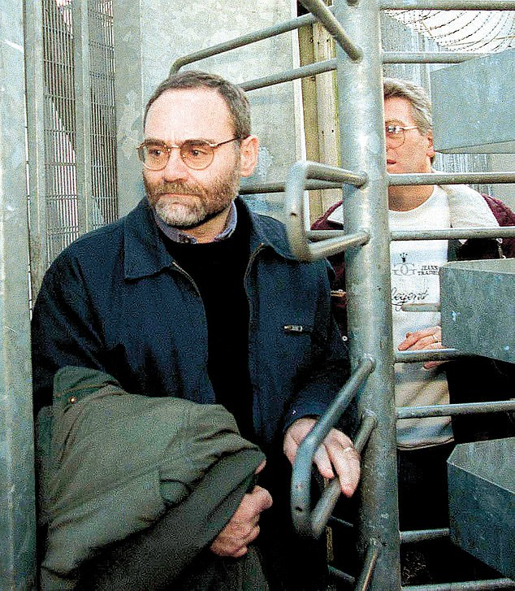

Maggie’s potential assassin, ironically named Magee is presented as someone who can’t catch a break. He has a troubled relationship with his wife, is arrested countless times, and it goes without saying, didn’t kill Thatcher.

Carroll’s detailed account of his whereabouts in England are interspersed with Magee’s own reflections later on in life, which are characteristically dry: “my life was too chaotic”. Carroll does well to chip away and reveal a portrait of a man who presented himself deliberately dull enough that no one seems to remember what he looks like (useful if you have attempted to assassinate a sitting prime minister). The bleak reality of being an anonymous IRA operative in England is contrasted with the historical implications of the task at hand. Guy Faulks planted a bomb under the Houses of Parliament that didn’t even go off, and people burn an effigy of him every year. The events of the book seem surreal to those born after the troubles; “one of the great what ifs” that Thatcher herself rarely chose to comprehend.
{kind=link}
Carroll dwells on the turning points of the era, such as the death of Bobby Sands and the rise of Gerry Adams’ Armalite / Ballot Box strategy, providing the relevant context for someone unfamiliar with the period. However, by focussing largely on the ‘England Department’ and specifically a single operation, these public-facing protagonists are side-lined in favour of a different type of history. One that is populated with normal people: students, office workers and landlords. These accounts provide important insight into the human cost of the troubles on both sides. Light relief comes somewhat unsurprisingly not from the members of the IRA (and Gerry Adams), but from the British detectives charged with locating Magee. The tangle of regional agencies searching for Magee as he drifts throughout the UK, whose jurisdiction changes every other page, results in a thrilling chase of comically bureaucratic proportions.
Maybe it’s too soon for a screen adaptation of these events, Carroll has been sensitive with his accounts and sources (with obvious reason), and wounds are still fresh, particularly those of Thatcher’s then “loyal enforcer” Norman Tebbit whose wife was paralysed by the attempt. However, the book is an account of a major event in modern British history that is genuinely hard to put down. Following the success of The Crown with its relentless march from the past to the present, and the Happy Valley genre of regional crime drama, Killing Thatcher has all the hallmarks of a hit series. Regardless of how people judge the event, Carroll has provided a valuable account, to remember.